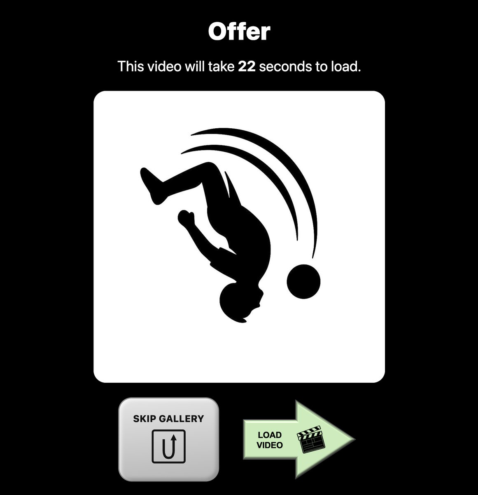

Sunk Costs and Persistence
Computation, Learning, and Development Lab
Web-Surf Task
When do people cut their losses? In the Web-Surf Task, people move through video galleries with a limited amount of time. Each offer tells them how many seconds a video will take to load, and they decide whether to wait for it or skip to the next gallery.
Because waiting costs time that can't be recovered, the task lets us study how time already invested shapes the decision to persist versus abandon, and how sensitivity to sunk costs differs across people.
Try a short demo ▶